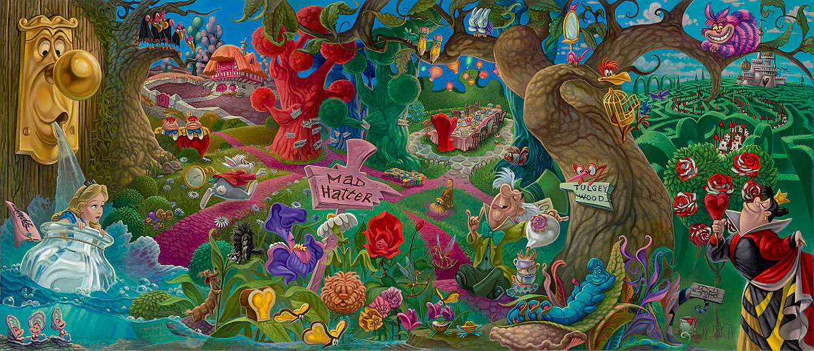

What is Alice in Wonderland about?
Alice in Wonderland follows a young girl named Alice who falls down a rabbit hole into a whimsical, unpredictable world filled with strange creatures and nonsensical logic. As she encounters characters like the White Rabbit, the Cheshire Cat, the Mad Hatter, and the Queen of Hearts, she navigates a series of absurd situations that challenge her understanding of rules, identity, and growing up. The story highlights imagination, the fluidity of reality, and the confusion of childhood as Alice tries to make sense of a world that never quite makes sense, ultimately waking to realize it was all a dream.

Who all is in Alice in Wonderland?
The characters in Alice in Wonderland are unique because each one embodies a distinct form of absurdity, whimsy, or logic taken to extremes, creating a world that constantly surprises both Alice and the reader. From the Cheshire Cat, who can vanish at will and speaks in riddles, to the Mad Hatter and March Hare, who live in a perpetual tea party, each character challenges conventional behavior and expectations. Even the Queen of Hearts, with her exaggerated temper and obsession with beheadings, adds to the story’s playful yet chaotic tone. Together, these strange personalities highlight the unpredictability of Wonderland and emphasize the story’s theme that not everything needs to follow ordinary rules to be meaningful.
Why was Alice in Wonderland created?
Alice in Wonderland was originally created by Lewis Carroll as an imaginative story to entertain a young girl named Alice Liddell during a boat trip in 1862. Carroll, who loved wordplay, logic puzzles, and fantasy, crafted the tale as a playful escape from the strict, orderly world of Victorian society. He expanded the story into a book to capture the creativity, humor, and nonsense that delighted Alice and her sisters. Ultimately, the story was created to celebrate imagination, challenge traditional logic, and remind readers—both children and adults—of the joy found in curiosity and wonder.